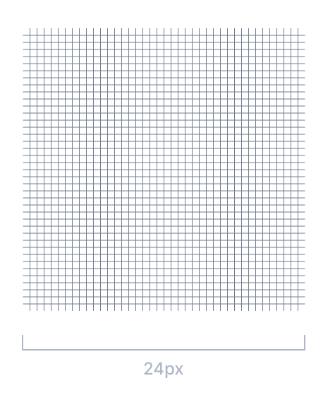
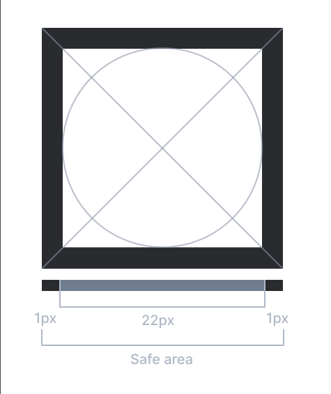
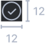
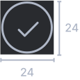
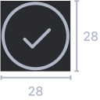

Iconography
Embracing the age-old wisdom that a picture is worth a thousand words, our icons embody this philosophy as the quintessential shorthand—crystal clear, straightforward, and effortlessly easy to interpret.
Grid
Embark on a visual journey with our Icons Grid System – a meticulously crafted collection that speaks a language of simplicity and clarity. Each icon serves as a design gem, meticulously placed within a grid system that's not just organized but a testament to seamless cohesion.


Icon Type
Explore our two primary icon categories: the timeless Default icons and the vibrant Color icons. Each set is meticulously crafted to cater to different design needs, providing versatility and aesthetic appeal for your digital endeavors.
Filled

Outline
Standard icon
These icons are the epitome of timeless simplicity and universal recognition, serving as the bedrock of visual communication in digital realm. From familiar symbols to intuitive representations, our Standard Default Icons effortlessly guide users through a seamless and familiar experience.
Flow icons and color icons
Flow Icons embody the very essence of Kissflow's intricate process flows within applications. Meanwhile, our Color Icons transcend mere visuals, infusing life into design language like a vibrant symphony that captivates and resonates.
Icon style
Explore our trio of distinctive icon styles: Fill, Type, and Background. Each style is meticulously crafted to cater to different design preferences, offering a diverse palette.
Fill
Filled
Outline
Type
Circle
Square
Background
Transparent
Gray
Fill
The Fill Icons are crafted to seamlessly integrate in the design, offering clarity and visual impact. Within the realm of Fill Icons, discover dual expressions – Solid and Outline variation provides a nuanced choice, allowing to shape visual narrative with either a bold, solid presence and an elegant, outlined finesse.
Type
Two distinctive types in icons, the classic elegance of circles and the structured sophistication of squares.
Background
For Background, we use a choice between transparency and a subtle gray palette in which perfectly complements our design vision.
Icon size
Our meticulously varied icon sizes provide a tailored splendid visual experience in the applications. For commanding presence or subtle detailing, our range of sizes ensures that every icon aligns seamlessly with the design intent. The sizes we provide are represented below.



Icon stroke
The stroke, or outline, of an icon is a delicate touch that adds precision and definition to every symbol. It's a subtle yet impactful element that contributes to the overall clarity and distinction of each icon, allowing a visual storytelling to stand out with finesse and sophistication. Explore the various strokes that define our icons, presented below for consideration.